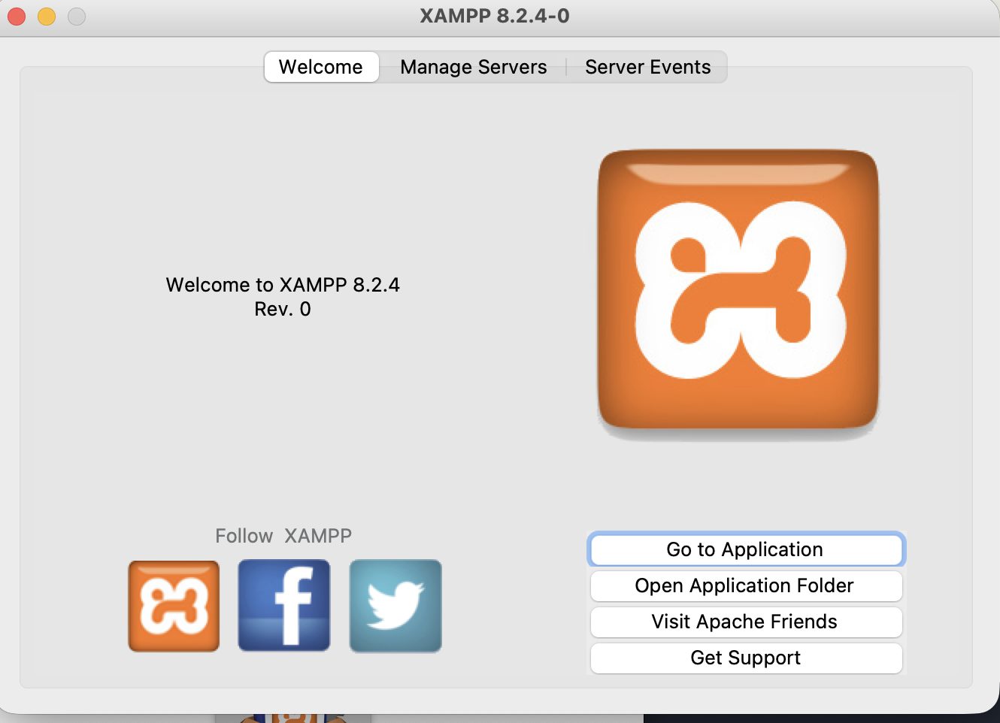
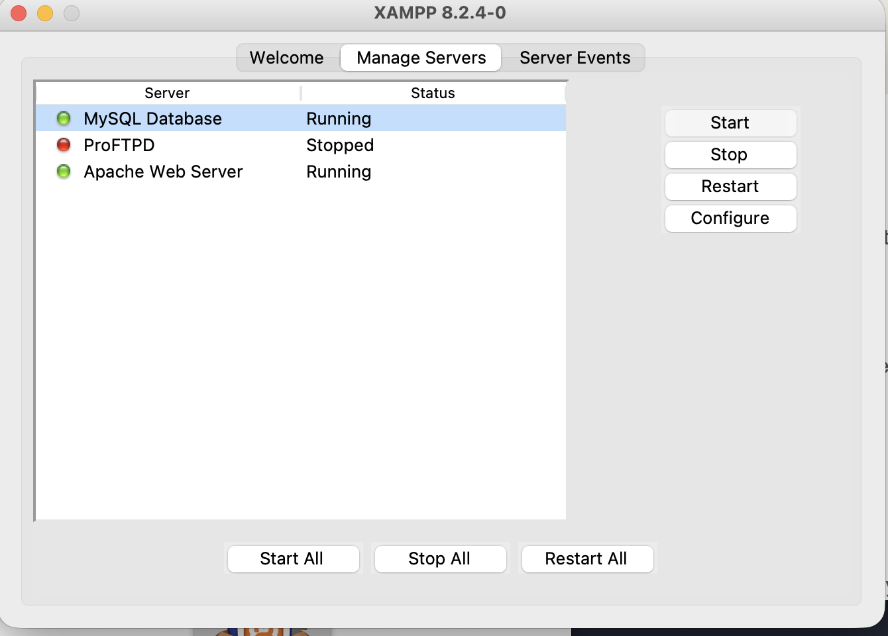
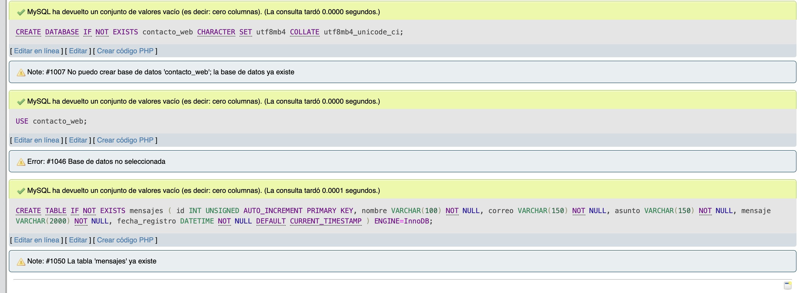
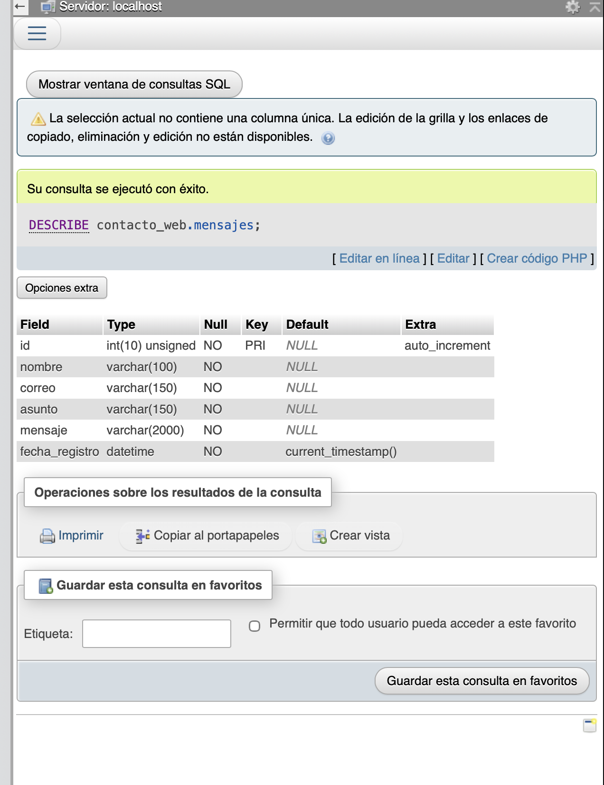
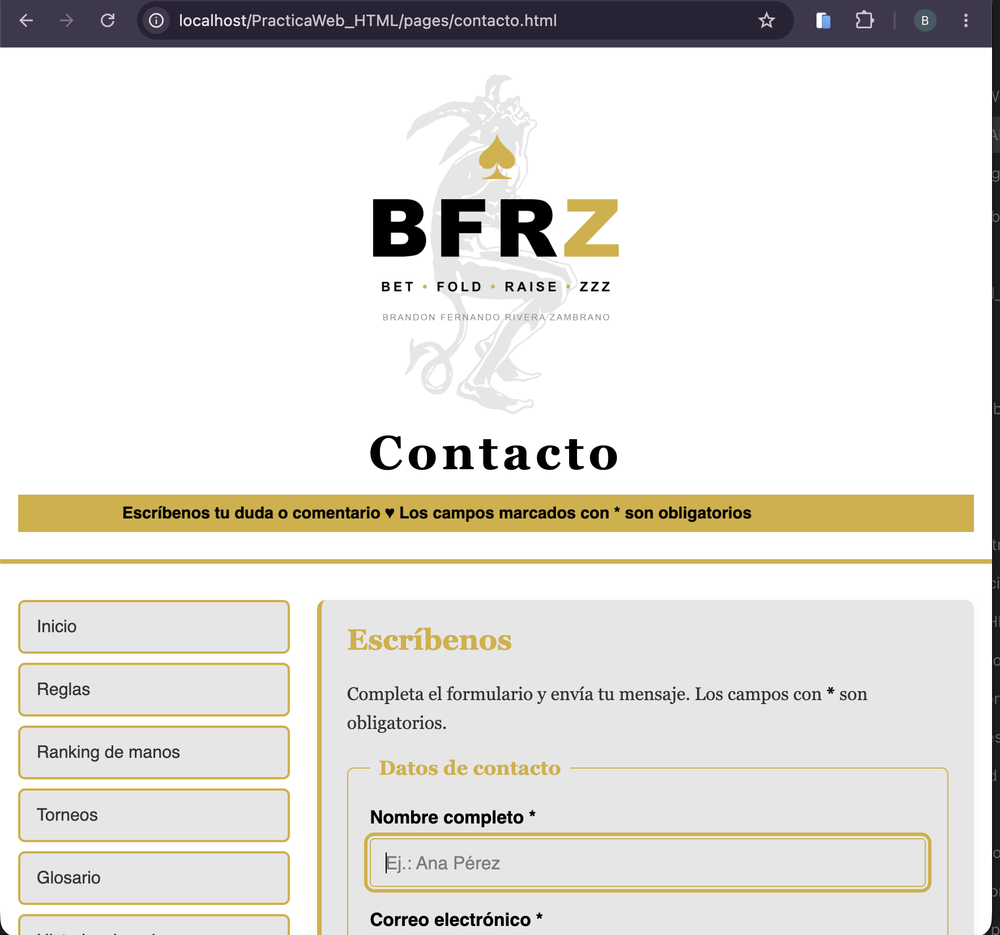
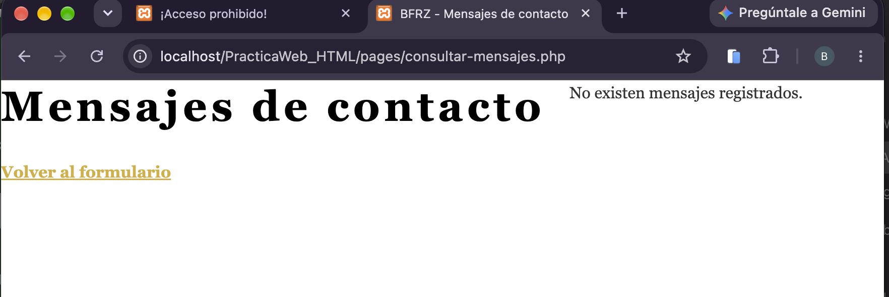
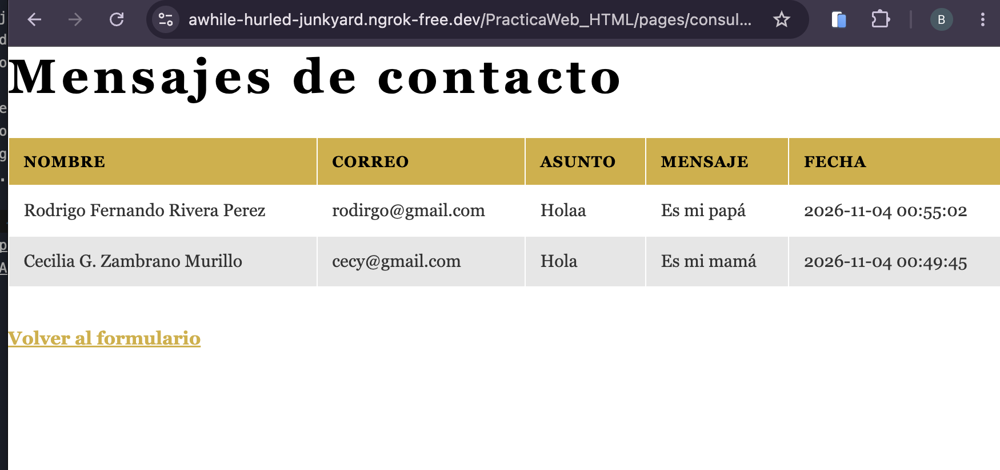
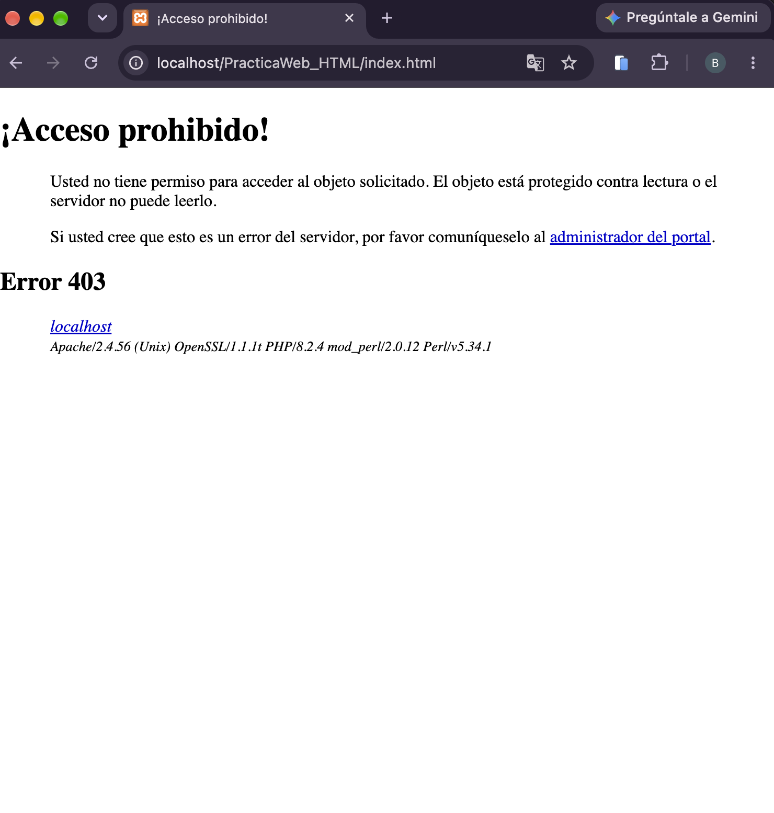
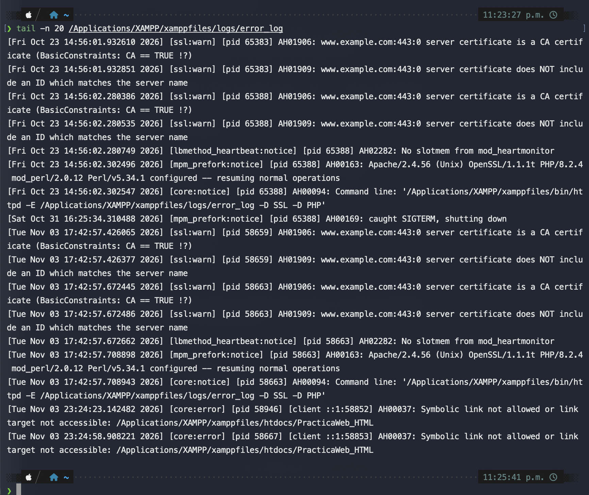

Estructura con HTML, diseño con CSS e integración de un formulario de contacto con PHP
Asignatura: Programación y Plataformas Web · Docente: Gabriel A. León Paredes, Ph.D.
Autor: Brandon Fernando Rivera Zambrano · Fecha: 04/11/2026
Desarrollar un sitio web de temática libre con HTML y CSS, con al menos cinco páginas, navegación y recursos multimedia, e integrar un formulario de contacto con validación, almacenamiento y consulta mediante PHP, con una base de datos diseñada y justificada por el estudiante.
El sitio, titulado BFRZ, explica las siglas Bet · Fold · River · Zzz de una mano de póker. Está compuesto por nueve páginas HTML: index.html y ocho páginas en pages/ (contacto, reglas, ranking de manos, torneos, glosario, historia, ecuador y manos). Todas comparten la misma cabecera, la misma navegación lateral y el mismo pie de página con el nombre del autor, un enlace mailto: y la información de copyright.
El contenido usa etiquetas semánticas de HTML5 (header, nav, main, article, figure, footer), encabezados, párrafos con strong, em y br, tablas, listas ordenadas y no ordenadas, y multimedia (audio, video con subtítulos y un video de YouTube). Hay más de cinco imágenes organizadas en carpetas y referenciadas con rutas relativas; una de ellas funciona como enlace.
La parte dinámica es el formulario de contacto de pages/contacto.html. Envía por POST a procesar-contacto.php, que valida en el servidor, guarda en MySQL con consultas preparadas y muestra una confirmación o errores comprensibles. La página consultar-mensajes.php muestra los registros en una tabla con los estilos del sitio.
La hoja css/estilos.css es externa y se enlaza desde todas las páginas, incluidas las generadas con PHP (../css/estilos.css). Está organizada con comentarios por sección y no usa estilos en línea, frameworks ni plantillas.
En la regla body se definen font-family, font-size, line-height y color. Esos valores se heredan a casi todo el contenido. Para mostrar la sobrescritura, el encabezado h1 define su propio color (var(--texto-fuerte)), que reemplaza al color heredado de body (var(--texto)). El resultado es que los títulos principales destacan del texto normal sin cambiar la tipografía, que sigue heredada. Lo mismo ocurre con los enlaces de la navegación: heredan la familia tipográfica de body pero redefinen su color en nav a.
| Requisito | Selector(es) usados | Propiedades principales | Páginas donde se aplica |
|---|---|---|---|
| Selector de etiqueta | body, h1, h2, p, strong, em | font-family, font-size, color | Todas |
| Selector de clase (reutilizada) | .tarjeta, .destacado, .figura, .campo, .boton, .saltar | background-color, border, padding | Tarjetas en index.html, historia.html, torneos.html; .campo y .boton en contacto.html |
| Selector de identificador (único por página) | #contenido, #video | max-width, margin | index.html (video) y el contenedor principal |
| Selector descendiente | header em, nav a, main ul, .figura img, tbody tr:nth-child(even) td | Estilos anidados según el contexto | Todas |
| Agrupación de selectores | .figura a:hover img, .figura a:focus img | border-color | Galerías de imágenes-enlace |
| Herencia (sobrescrita) | body → h1 | color | Todas |
| Tipografía (fuente, tamaño, interlineado) | body, h1, h2, h3, p | font-family, font-size, line-height, font-weight | Todas |
| Flexbox: cabecera, menú y contenido en dos columnas | body, .cuerpo, header, nav ul | display: flex, flex-direction, gap, align-items, justify-content | Todas |
Flexbox con flex-wrap (distribución interior) | main (tarjetas e imágenes) | display: flex, flex-wrap: wrap, gap | index.html, historia.html, ecuador.html |
| Modelo de caja y centrado con márgenes automáticos | .cuerpo, main, #video, .figura | margin: 0 auto, padding, border | Todas |
| Navegación (lista sin viñetas, enlaces en bloque) | nav ul, nav a | list-style-type: none, display: block, padding, background-color, border | Todas |
Estados :hover y :active | nav a:hover, nav a:active, main a:hover, .boton:hover, .boton:active | background-color, color | Todas |
| Imágenes proporcionales | img, img.logo, .figura img | max-width: 100%, height: auto | Todas |
| Listas personalizadas (diferenciadas del menú) | main ul, main ol | list-style-type: square / decimal | reglas.html, historia.html |
| Tablas | table, th, td, tbody th | border-collapse: collapse, padding, background-color | ecuador.html, ranking-jugadores.html, torneos.html, historia.html |
| Formulario: etiquetas en bloque, campos separados, relleno y foco | fieldset, legend, label, .campo, textarea, .campo:focus | display: block, margin, padding, :focus | pages/contacto.html |
| Pie de página después del contenido | footer, footer address, footer a | Flujo normal (sin superposición) | Todas |
| Diseño adaptable | @media (max-width: 800px), @media (max-width: 600px) | Columna única en pantallas pequeñas | Todas |
:hover, :active y :focus se verifican en la navegación y en los campos del formulario.
Se diseñó una única tabla, mensajes, dentro de la base contacto_web (juego de caracteres utf8mb4, para admitir acentos y eñes). Es una base pequeña porque el caso de uso es un solo tipo de registro: un mensaje de contacto.
| Campo | Tipo | Restricciones | Justificación |
|---|---|---|---|
id | INT UNSIGNED | PRIMARY KEY, AUTO_INCREMENT, NOT NULL | Identificador único y sin valores negativos. Permite ordenar por orden de llegada. |
nombre | VARCHAR(100) | NOT NULL | Límite de 100 caracteres exigido por el enunciado; VARCHAR ahorra espacio frente a CHAR. |
correo | VARCHAR(150) | NOT NULL | Límite de 150 caracteres exigido. El formato se valida con FILTER_VALIDATE_EMAIL antes de insertar. |
asunto | VARCHAR(150) | NOT NULL | Límite de 150 caracteres exigido. |
mensaje | VARCHAR(2000) | NOT NULL | Límite de 2000 caracteres exigido. Se usa VARCHAR y no TEXT para que el límite quede reflejado en la propia base. |
fecha_registro | DATETIME | NOT NULL, DEFAULT CURRENT_TIMESTAMP | La fecha la asigna el motor, así que no depende del cliente. Permite ordenar y mostrar cuándo se envió cada mensaje. |
No se usan claves foráneas porque no hay relaciones entre tablas. Tampoco se guardan contraseñas ni datos sensibles, y el enunciado no pide edición ni eliminación, por lo que no se agregaron esas operaciones.
El sitio estático se publica en GitHub Pages, y la parte PHP se ejecuta en XAMPP local y se expone con ngrok. GitHub Pages no ejecuta PHP; por eso el formulario apunta a la URL pública del túnel.
Navegador ──(1) páginas, CSS, imágenes──▶ GitHub Pages (estático)
│
├──(2) POST del formulario──▶ ngrok (https público) ──▶ Apache XAMPP :80
│ │
│ procesar-contacto.php │ (3) valida
│ ▼
│ MySQL · contacto_web.mensajes
│ ▲
└──(4) abre consultar-mensajes.php──▶ ngrok ──▶ Apache ──┘ (5) SELECT
Paso 1. El usuario completa contacto.html. Los atributos required, maxlength y type="email" ayudan en el cliente, pero no bastan.
Paso 2. El formulario envía los datos por POST a procesar-contacto.php.
Paso 3. El servidor limpia los datos con trim() y valida: campos obligatorios no vacíos ni solo con espacios, formato de correo y longitudes con mb_strlen. Si hay errores, muestra la lista con htmlspecialchars y no toca la base. Si todo es correcto, ejecuta un INSERT con prepare() y bind_param('ssss', ...). Solo se confirma cuando affected_rows es 1.
Paso 4. La confirmación aparece únicamente tras el registro exitoso, con enlace a la consulta.
Paso 5. consultar-mensajes.php ejecuta un SELECT ordenado por fecha descendente. Si no hay filas, muestra “No existen mensajes registrados”. Cada dato pasa por htmlspecialchars antes de imprimirse.
Las pruebas se hicieron manualmente en el entorno local (XAMPP) y, para el envío, a través de ngrok desde el sitio publicado. Para cada caso se registra la acción, el resultado esperado, el resultado obtenido y la captura correspondiente.
| Caso | Acción o datos | Resultado esperado | Resultado obtenido | Captura |
|---|---|---|---|---|
| P1 | Recorrer las cinco páginas y abrir enlaces, imágenes y multimedia. | Navegación y recursos funcionales; estilos consistentes. | El sitio carga con estilos, logotipo y navegación. Pendiente: recorrido completo de enlaces y multimedia. | 09 |
| P2 | Interactuar con el menú y los campos; reducir el ancho de la ventana. | Cambios visibles de estados y foco; tarjetas se redistribuyen sin superponerse. | Pendiente de verificar. | — |
| P3 | Abrir la consulta antes de registrar mensajes. | Se informa que no existen mensajes. | Se muestra “No existen mensajes registrados.” | 11 |
| P4 | Enviar tres mensajes válidos diferentes. | Cada envío se confirma; aparecen exactamente los tres registros con datos y fecha. | Los envíos se confirman y aparecen con fecha en la consulta. Pendiente: registrar el tercer envío y capturar la tabla con los tres registros. | 13 |
| P5 | Enviar por separado cada campo obligatorio vacío y luego solo con espacios. | Se rechaza cada caso; no aumenta el número de registros. | Pendiente. | — |
| P6 | Enviar un correo sin formato válido. | Se muestra error; no se inserta el mensaje. | Pendiente. | — |
| P7 | Superar por separado cada límite: nombre 101, correo 151, asunto 151 y mensaje 2001 caracteres. | Se rechaza cada exceso sin insertar; los demás campos válidos. | Pendiente. | — |
| P8 | Cerrar y volver a abrir la página de consulta después de registrar mensajes. | Se conservan los mensajes y sus datos. | Los mensajes se mantienen al volver a abrir la consulta desde ngrok. Pendiente: captura del cierre y reapertura. | 13 |
Validación del servidor (P5 a P7): para comprobar que el servidor rechaza los datos aunque el navegador no lo haga, se desactivan temporalmente las restricciones del cliente (quitando required y maxlength desde las herramientas de desarrollo) y se envían los casos. Cada variante debe registrarse en esta tabla con su captura.



mensajes desde phpMyAdmin.
mensajes (DESCRIBE): tipos, claves y valores por defecto.


Durante la integración aparecieron los siguientes problemas. Se resolvieron así:
Documents y se enlazó a htdocs con un enlace simbólico. Apache registró AH00037: Symbolic link not allowed or link target not accessible (Figura 8). La causa fue que el usuario del servidor no podía entrar a la carpeta personal del usuario. Se resolvió moviendo el proyecto directamente dentro de htdocs.contacto.html con sed -i, el archivo quedó con permisos que impedían su lectura, y Apache respondió 403. Se corrigió con chmod 644.images/ por ACL heredadas de macOS. Se eliminaron con chmod -RN.
htdocs.
AH00037.htmlspecialchars cubren los dos riesgos más comunes, la inyección SQL y el XSS.body reduce la repetición, y Flexbox resuelve la distribución de la cabecera, el menú y las tarjetas con menos código que con posicionamiento manual.